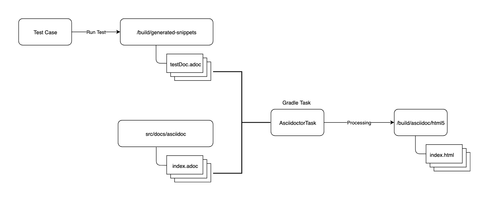
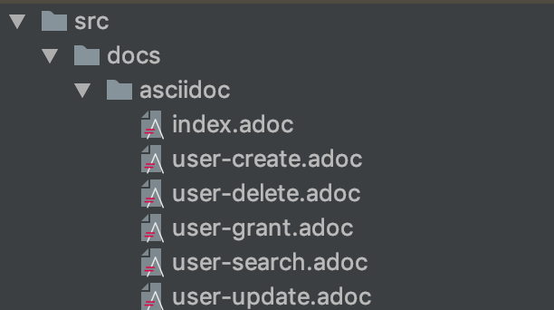
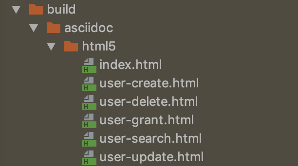
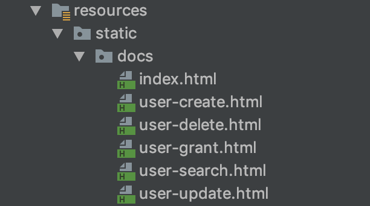
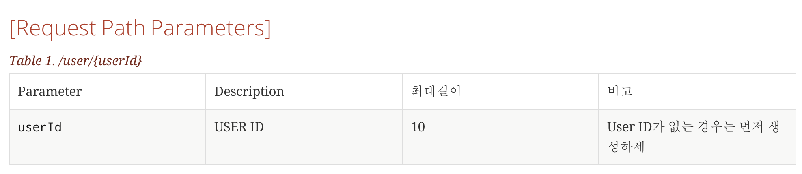
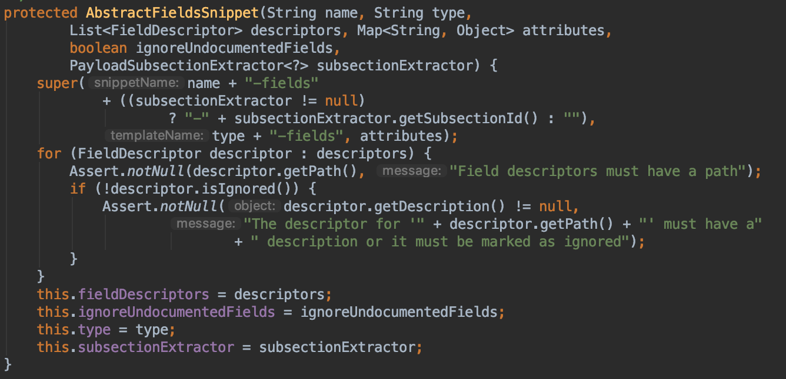
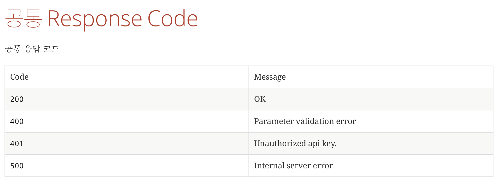

Spring Rest API 문서를 자동으로 생성하고자 할 때, 보통 Swagger로 많이 사용하지만
포스팅에 작성된 코드는 https://github.com/jaehun2841/spring-rest-docs-example 에서 참고하시길 바랍니다.
Spring Rest Docs란 Spring Rest Docs는 테스트 코드를 기반으로 자동으로 API문서를 작성할 수 있게 해주는 프레임워크입니다.Test가 통과되어야 문서가 작성 된다는 장점이 있습니다.
Spring Rest Docs Architecture 
Test Case를 수행하면 산출물이 .adoc 파일로 /build/generate-snippets 디렉토리에 생성됩니다. (default path)
/src/docs/asciidoc 디렉토리에 /build/generate-snippets에 있는 adoc 파일을 include하여 문서를 생성할 수 있습니다.
/build/generate-snippets/*.adoc 파일들은 API Request, Response에 대한 명세들만 있는 파일이고
/src/docs/asciidoc/*.adoc 파일들이 실제 사용자에게 html파일로 변환되어 제공되는 API 문서 파일입니다.
따라서 /src/docs/asciidoc/*.adoc 에 API 문서를 작성하고,
이렇게 하면 향후 API Spec이 변경되더라도, 문서를 수정하지 않아도 되는 장점이 있습니다.
이렇게 생성된 asciidoc 문서는 AsciidoctorTask를 통해 html 문서로 processing 되어 /build/asciidoc/html5 하위에 html문서로 생성됩니다.
html 문서가 생성되는 기준은 /src/docs/asciidoc/*.adoc 파일을 기준으로 생성됩니다.
예시 /src/docs/asciidoc 디렉토리 내에 html로 제공될 문서를 asciidoc으로 작성 
Test Case의 산출물
/build/generated-snippets 디렉토리 하위에 생성
Request, Response Spec에 대한 정보를 생성
/src/docs/asciidoc/*.adoc 파일에서 include해서 사용/src/docs/asciidoc 디렉토리 adoc파일을 기반으로 생성된 html 파일 
자세한 부분은 아래 예시를 따라하면서 보시면 좋을 것 같습니다.
Spring Rest Docs 시작하기 개발 스펙
Spring Boot 2.1.6.RELEASE
Junit 5
Kotlin 1.3.41 (저희 팀에서 코틀린만 써서 코틀린이 편하네요)
Gradle 5.4.1
Asciidoctor 1.5.9.2
Test Library Spring Rest Docs는 3가지 테스트 라이브러리를 지원합니다.
MockMvc (@WebMvcTest)
WebTestClient (Mono / Flux, @WebTestClient)
Rest Assured (IntegrationTest, @SpringBootTest)
API 문서를 작성할 때 Spring Mvc를 사용하는 환경이라면 가장 가볍게 돌릴 수 있는게 MockMvc를 사용하는 것이라 생각합니다.
Gradle 설정 asciidoctor plugin 설정 1 2 3 4 5 6 7 8 9 10 11 12 13 14 15 16 17 18 19 20 21 22 23 24 25 26 27 28 29 30 31 32 33 34 35 36 37 38 39 40 41 42 43 44 45 46 47 48 49 50 51 52 53 54 55 56 57 58 59 60 61 62 63 64 65 66 67 68 69 70 71 72 73 74 75 76 77 78 79 80 81 82 83 84 85 86 87 88 89 90 91 92 93 94 95 96 97 98 99 100 101 102 103 104 105 106 107 108 109 110 111 112 113 114 115 buildscript { ext { kotlinVersion = '1.3.41' springBootVersion = "2.1.6.RELEASE" } repositories { mavenCentral() } dependencies { classpath "org.springframework.boot:spring-boot-gradle-plugin:$springBootVersion" classpath "org.jetbrains.kotlin:kotlin-gradle-plugin:$kotlinVersion" } } plugins { id 'org.asciidoctor.convert' version '1.5.9.2' id 'org.springframework.boot' version '2.1.6.RELEASE' id "io.spring.dependency-management" version "1.0.5.RELEASE" } apply plugin: 'io.spring.dependency-management' apply plugin: 'kotlin' apply plugin: "groovy" apply plugin: "org.springframework.boot" apply plugin: "io.spring.dependency-management" apply plugin: "kotlin-kapt" group = 'com.example' version = '0.0.1-SNAPSHOT' sourceCompatibility = '1.8' repositories { mavenCentral() } ext { set('snippetsDir' , file("build/generated-snippets" )) } dependencies { implementation 'org.springframework.boot:spring-boot-starter-web' testImplementation("org.springframework.boot:spring-boot-starter-test" ) { exclude group: "junit" , module: "junit" } testImplementation "org.junit.jupiter:junit-jupiter-api" testImplementation "org.junit.jupiter:junit-jupiter-params" testRuntimeOnly "org.junit.jupiter:junit-jupiter-engine" testImplementation 'org.springframework.restdocs:spring-restdocs-mockmvc' testImplementation "com.nhaarman:mockito-kotlin:1.6.0" implementation "org.jetbrains.kotlin:kotlin-stdlib-jdk8:$kotlinVersion" } kapt { useBuildCache = true correctErrorTypes = true } test { useJUnitPlatform() outputs.dir snippetsDir } asciidoctor { inputs.dir snippetsDir dependsOn test } asciidoctor.doFirst { println "=====start asciidoctor" delete file('src/main/resources/static/docs' ) } asciidoctor.doLast { println "=====finish asciidoctor" } task copyDocument(type: Copy) { dependsOn asciidoctor from file("build/asciidoc/html5" ) into file("src/main/resources/static/docs" ) } build { dependsOn copyDocument } bootJar { archiveName = 'app.jar' dependsOn asciidoctor from ("${asciidoctor.outputDir}/html5" ) { into "BOOT-INF/classes/static/docs" } } compileKotlin { kotlinOptions { freeCompilerArgs = ["-Xjsr305=strict" ] jvmTarget = "1.8" } } compileTestKotlin { kotlinOptions { freeCompilerArgs = ["-Xjsr305=strict" ] jvmTarget = "1.8" } } jar.enabled = false bootJar.enabled = true bootJar.mainClassName = 'com.example.restdocs.RestdocsApplication'
testImplementation 'org.springframework.restdocs:spring-restdocs-mockmvc' : mockMvc 테스트를 통해 API adoc 파일을 생성해주도록 하는 라이브러리 입니다.id 'org.asciidoctor.convert' version '1.5.9.2' : asciidoc 파일을 html 파일로 processing 해주는 플러그인 입니다.asciidoctor : asciidoc 파일을 html 파일로 processing 해주는 Gradle Task를 정의합니다.
User API 코드 작성 UserController.kt 1 2 3 4 5 6 7 8 9 10 11 12 13 14 15 16 17 18 19 20 21 22 23 24 25 26 27 28 29 30 31 32 33 34 35 36 37 38 39 40 @Suppress("SpringJavaInjectionPointsAutowiringInspection" ) @RestController @RequestMapping("/user" ) open class UserController val userService: UserService ) { @GetMapping("/{userId}" ) fun getUser (@PathVariable(value = "userId" ) userId: Long ) val searchUser = userService.search(userId) return Response.success(searchUser) } @PostMapping fun createUser (@RequestBody userDto: UserDto ) val createUser = userService.create(User(name = userDto.name, address = userDto.address, age = userDto.age)) return Response.success(createUser) } @PutMapping("/{userId}" ) fun updateUser (@PathVariable("userId" ) userId: Long , @RequestBody userDto: UserDto ) val updateUser = userService.update(User(id = userId, name = userDto.name, address = userDto.address, age = userDto.age)) return Response.success(updateUser) } @DeleteMapping("/{userId}" ) fun deleteUser (@PathVariable(value = "userId" ) userId: Long ) Unit > { userService.delete(userId) return Response.success() } @PostMapping("/{userId}/role/{roleId}" ) fun grantRole (@PathVariable(value = "userId" ) userId: Long , @PathVariable(value = "roleId" ) roleId: Long ) Unit > { userService.grantRole(userId = userId, roleId = roleId) return Response.success() } }
UserService.kt 1 2 3 4 5 6 7 8 interface UserService fun search (userId: Long ) fun create (user: User ) fun update (user: User ) fun delete (userId: Long ) fun grantRole (userId: Long , roleId: Long ) }
Response.kt 1 2 3 4 5 6 7 8 9 10 11 12 13 data class Response <T > val code: Int , val message: String, val data : T?, val error: T? ) { companion object { fun success () Unit > = success(null ) fun <T> success (data : T ?) 200 , "OK" , data , null ) fun <T> error (error: T ?) 500 , "Server Error" , null , error) } }
User.kt 1 2 3 4 5 6 7 data class User val id: Long ? = null , val name: String, val age: Int , val address: String, var roles: MutableList<Role> = mutableListOf() )
Test 코드 작성 1 2 3 4 5 6 7 8 9 10 11 12 13 14 15 16 17 18 19 20 21 22 23 24 25 26 27 28 29 30 31 32 33 34 35 36 37 38 39 40 41 42 43 44 45 46 47 48 49 50 51 52 53 54 55 56 57 58 59 60 61 62 63 64 65 66 67 68 69 70 71 72 73 74 75 76 77 78 79 80 81 82 83 84 85 86 87 88 89 90 91 @ExtendWith(RestDocumentationExtension::class, SpringExtension::class) @WebMvcTest(UserController::class, secure = false) @AutoConfigureRestDocs class UserControllerTest @Autowired lateinit var mockMvc: MockMvc @MockBean lateinit var userService: UserService @Test fun `user search api docs`() given(userService.search((eq(1L )))) .willReturn(User(1 , "배달이" , 10 , "서울특별시 송파구 올림픽로 295" )) val resultActions = mockMvc.perform( RestDocumentationRequestBuilders.get ("/user/{userId}" , 1 ) .header("x-api-key" , "API-KEY" ) .accept(MediaType.APPLICATION_JSON_UTF8) ).andDo(MockMvcResultHandlers.print()) resultActions .andExpect(status().isOk) .andDo( document( "user-search" , getDocumentRequest(), getDocumentResponse(), requestHeaders(*header()), pathParameters(userIdPathParameter()), responseFields(*common()) .andWithPrefix("data." , *user()) .andWithPrefix("data.roles[]." , *role()) ) ) } {...} private fun getUserDto () return """ { "name": "배달이", "age": 10, "address": "서울특별시 송파구 올림픽로 295" } """ .trimIndent() } private fun header () return arrayOf(headerWithName("x-api-key" ).description("Api Key" )) } private fun userIdPathParameter () return parameterWithName("userId" ).description("USER ID" ) } private fun roleIdPathParameter () return parameterWithName("roleId" ).description("ROLE ID" ) } private fun common () return arrayOf( fieldWithPath("code" ).type(JsonFieldType.NUMBER).description("응답 코드" ), fieldWithPath("message" ).type(JsonFieldType.STRING).description("응답 메세지" ), subsectionWithPath("error" ).type(JsonFieldType.OBJECT).description("에러 Data" ).optional(), subsectionWithPath("data" ).type(JsonFieldType.OBJECT).description("응답 Data" ).optional() ) } private fun user () return arrayOf( fieldWithPath("id" ).type(JsonFieldType.NUMBER).description("User ID" ), fieldWithPath("name" ).type(JsonFieldType.STRING).description("이름" ), fieldWithPath("age" ).type(JsonFieldType.NUMBER).description("나이" ), fieldWithPath("address" ).type(JsonFieldType.STRING).description("주소" ) ) } private fun role () return arrayOf( fieldWithPath("id" ).type(JsonFieldType.NUMBER).description("Role ID" ).optional(), fieldWithPath("name" ).type(JsonFieldType.STRING).description("Role명" ).optional() ) } }
1 2 3 4 5 6 7 8 9 10 11 12 13 14 15 16 object RestApiDocumentUtils { fun getDocumentRequest () return Preprocessors.preprocessRequest( modifyUris() .scheme("http" ) .host("user.api.com" ) .removePort(), Preprocessors.prettyPrint() ) } fun getDocumentResponse () return Preprocessors.preprocessResponse(Preprocessors.prettyPrint()) } }
코드 설명
Junit5에서 Spring Rest Docs를 사용할 때, RestDocumentationExtension::class, SpringExtension::class Extension 두개를 사용합니다.
@WebMvcTest annotation을 사용하여, mockMvc를 사용할 수 있는 환경을 설정합니다.
이 예제에서는 UserController에 대한 테스트와 API문서를 작성하므로, controller를 UserController로 지정합니다.
spring security를 사용하는 경우, secure=false 옵션을 통해 Spring Security 사용 안함으로 설정할 수 있습니다.
Spring Rest Docs에 대한 Auto Configuration을 설정합니다.
mockMvc를 사용하기 위해 MockMvc bean을 Autowiring 해줍니다.
UserService에 대한 Mocking을 위해 @MockBean annotation을 통해 Test Context에 bean으로 등록해줍니다.
UserService.search() function에 대한 stubbing을 해줍니다. (호출 시, return 되는 값 지정)
mockMvc를 이용하여, GET /user/1 API를 호출 합니다.
API 호출 결과에 대해 간단한 status체크 정도로 테스트 항목을 추가했습니다.
andDo function으로 Asciidoc을 생성하도록 설정합니다.user-search는 테스트가 수행 된 후, adoc 파일이 생성될 디렉토리 이름입니다./build/generate-snippets/user-search/*.adoc path에 adoc 파일이 생성됩니다.
DocumentRequest에 대한 설정을 추가합니다.
modifyUris()를 통해 adoc 파일에 어떤 도메인으로 API를 호출 할 지, 정의할 수 있습니다.http://localhost:8080 입니다.)
Request Json을 이쁘장하게 출력하도록 해줍니다
DocumentResponse에 대한 설정을 추가합니다.
Response Json을 이쁘장하게 출력하도록 해줍니다
requestHeader 정보를 추가합니다.
path parameter 정보를 추가합니다.
responseFields 정보를 추가합니다.
Document 생성하기 asciidoctor를 이용하면 6개의 snippet 파일을 기본적으로 생성해줍니다.
예시
<output-directory>/<document-name>/curl-request.adoc 1 2 3 4 5 6 [source,bash] ---- $ curl 'http://user.api.com/user/1' -i -X GET \ -H 'Accept: application/json;charset=UTF-8' \ -H 'x-api-key: API-KEY' ----
<output-directory>/<document-name>/http-request.adoc1 2 3 4 5 6 7 8 [source,http,options="nowrap"] ---- GET /user/1 HTTP/1.1 Accept: application/json;charset=UTF-8 Host: user.api.com x-api-key: API-KEY ----
<output-directory>/<document-name>/http-response.adoc1 2 3 4 5 6 7 8 [source,http,options="nowrap"] ---- GET /user/1 HTTP/1.1 Accept: application/json;charset=UTF-8 Host: user.api.com x-api-key: API-KEY ----
<output-directory>/<document-name>/httpie-request.adoc1 2 3 4 5 6 [source,bash] ---- $ http GET 'http://user.api.com/user/1' \ 'Accept:application/json;charset=UTF-8' \ 'x-api-key:API-KEY' ----
<output-directory>/<document-name>/request-body.adoc1 2 3 4 5 6 [source,http,options="nowrap"] ---- { "name": "홍길동" } ----
<output-directory>/<document-name>/response-body.adoc1 2 3 4 5 6 7 8 9 10 11 12 13 14 15 [source,options="nowrap"] ---- { "code" : 200, "message" : "OK", "data" : { "id" : 1, "name" : "배달이", "age" : 10, "address" : "서울특별시 송파구 올림픽로 295", "roles" : [ ] }, "error" : null } ----
Optional하게 생성되는 snippet도 존재합니다.
<output-directory>/<document-name>/path-parameters.adoc.adoc : Path Parameters에 대한 정보를 표로 나타냅니다.<output-directory>/<document-name>/request-headers.adoc.adoc : request header에 대한 정보를 표로 나타냅니다.<output-directory>/<document-name>/request-fieldadoc : request fields에 대한 정보를 표로 나타냅니다.<output-directory>/<document-name>/response-fields.adoc : response fields에 대한 정보를 표로 나타냅니다.
API Document 생성하기 1 2 3 4 5 6 7 8 9 10 11 12 13 14 15 16 17 18 19 20 21 22 23 24 25 26 27 28 29 30 31 32 33 34 35 36 37 38 39 40 41 ifndef::snippets[] :snippets: ../../../build/generated-snippets endif::[] :doctype: book :icons: font :source-highlighter: highlightjs :toc: left :toclevels: 4 :sectlinks: :site-url: /build/asciidoc/html5/ == Request === [Request URL] .... GET /user/{userId} Content-Type: application/json;charset=UTF-8 .... === [Request Headers] include::{snippets}/user-search/request-headers.adoc[] === [Request Path Parameters] include::{snippets}/user-search/path-parameters.adoc[] === [Request HTTP Example] include::{snippets}/user-search/http-request.adoc[] == Response === [Response Fields] include::{snippets}/user-search/response-fields.adoc[] === [Response HTTP Example] include::{snippets}/user-search/http-response.adoc[]
/src/docs/asciidoc 디렉토리를 생성하고 user-search.adoc 파일을 생성합니다.
이 파일은 html로 변환될 adoc 파일입니다.
snippet에 대한 path를 지정하고 include:: 를 통해 adoc 파일을 include하여 processing 할 수 있습니다.
include 된 파일은 include한 부분에 html 태그로 직접 삽입됩니다.
processing 된 html 파일은 /build/docs/html5 디렉토리에 생성됩니다 (default)
부가적으로 API 문서에 대한 내용을 작성하여 API 문서를 만들 수 있습니다. (ex: API 설명, 담당자, 주의사항)
HTML 문서 Serving 해보기 Spring Rest Docs로 만들어진 API 문서의 최종 형태는 HTML 파일로 제공됩니다.
SpringBoot의 WebMvcConfigure를 상속하여 Configuration을 추가합니다.
1 2 3 4 5 6 7 8 9 10 11 12 13 package com.example.restdocs.configurationimport org.springframework.context.annotation .Configurationimport org.springframework.web.servlet.config.annotation .ResourceHandlerRegistryimport org.springframework.web.servlet.config.annotation .WebMvcConfigurer@Configuration open class WebMvcConfig : WebMvcConfigurer { override fun addResourceHandlers (registry: ResourceHandlerRegistry ) registry.addResourceHandler("/docs/**" ).addResourceLocations("classpath:/static/docs/" ) } }
위와 같이 설정을 추가하게 되면localhost:8080/docs/index.html 과 같이 /docs/** 패턴으로 유입되는 url에 대해

여러가지 Function 사용해보기 PathParameters
API의 Path Parameter에 대한 Snippet을 생성합니다.
/build/generated-snippets/<document-name>/path-parameters.adoc 인 파일명으로 생성됩니다.
pathParameter(parameterWithName(“key 명칭”).description(“key가 의미 하는 내용”)) 으로 코드를 작성합니다.
1 2 3 4 5 6 7 8 9 10 11 12 13 14 resultActions .andExpect(status().isOk) .andDo( document( "user-update" , getDocumentRequest(), getDocumentResponse(), requestHeaders(*header()), pathParameters(parameterWithName("userId" ).description("유저 ID" )), responseFields(*common()) .andWithPrefix("data." , *user()) .andWithPrefix("data.roles[]." , *role()) ) )
API의 Request Header에 대한 Snippet을 생성합니다.
/build/generated-snippets/<document-name>/request-headers.adoc 인 파일명으로 생성됩니다.
requestHeader(headerWithName(“header-key명”).description(“header-key가 의미하는 내용”))
1 2 3 4 5 6 7 8 9 10 11 12 13 14 resultActions .andExpect(status().isOk) .andDo( document( "user-grant-role" , getDocumentRequest(), getDocumentResponse(), requestHeaders(headerWithName("api-auth-key" ).description("API 인증 키" )), pathParameters(userIdPathParameter(), roleIdPathParameter()), responseFields(*common()) .andWithPrefix("data." , *user()) .andWithPrefix("data.roles[]." , *role()) ) )
fieldWithPath
API의 Request, Response Snippet을 구성하는 요소를 정의하는 가장 기본적인 function입니다.
fieldWithPath(“key”) 형태로 API Request, Response 내의 요소를 정의 할 수 있습니다.
Attributes
description(“내용”) : Request, Response 내의 요소의 내용을 정의합니다.
type(JsonFieldType.TYPE) : Request, Response 내의 요소의 타입을 정의합니다.
optional() : Request, Response 내의 요소의 필수값 여부를 정의합니다. (optional()를 선언하면 필수값 아님)
1 2 3 4 5 6 7 8 9 10 11 12 13 14 15 16 17 18 19 resultActions .andExpect(status().isOk) .andDo( document( "user-grant-role" , getDocumentRequest(), getDocumentResponse(), requestHeaders(*header()), pathParameters(userIdPathParameter(), roleIdPathParameter()), responseFields( fieldWithPath("code" ).type(JsonFieldType.NUMBER).description("응답 코드" ), fieldWithPath("message" ).type(JsonFieldType.STRING).description("응답 메세지" ), subsectionWithPath("error" ).type(JsonFieldType.OBJECT).description("에러 Data" ).optional(), subsectionWithPath("data" ).type(JsonFieldType.OBJECT).description("응답 Data" ).optional() ) .andWithPrefix("data." , *user()) .andWithPrefix("data.roles[]." , *role()) ) )
subSectionWithPath
API Request, Response Snippet을 구성하는 요소를 정의하는 function입니다.
요소의 하위를 선언하고 싶지 않거나, 가변적인 Request, Response가 오는 경우 사용하기 좋습니다.
subSectionWithPath는 root key가 존재하는 지만 체크하고 하위 key에 대한 체크는 하지 않습니다.
1 2 3 4 5 6 7 8 9 10 11 { "message" : "Parameter validation error" , "code" : 4000 , "errors" : [ { "field" : "receivers[0].phone" , "value" : "010469090" , "errorMessage" : "유효하지 않은 수신자 번호입니다." } ] }
위와 같은 응답이 오는 경우
1 2 3 4 5 6 7 8 9 10 11 12 13 resultActions .andExpect(status().isOk) .andDo( document( "user-grant-role" , getDocumentRequest(), getDocumentResponse(), requestHeaders(*header()), pathParameters(userIdPathParameter(), roleIdPathParameter()), responseFields(*common()) .and(fieldWithPath("errors" ).type(JsonFieldType.ARRAY).description("에러 Data" )) ) )
아래와 같은 에러가 발생하게 됩니다.
1 2 3 4 5 6 7 8 9 10 org.springframework.restdocs.snippet.SnippetException: The following parts of the payload were not documented: { "errors" : [ { "field" : "receivers[0].phone" , "value" : "010469090" , "errorMessage" : "유효하지 않은 수신자 번호입니다." } ] }
하지만 subSectionWithPath를 사용하게 되면 errors 하위에 대한 정보는 문서화 하지 않겠다!를 의미하므로
1 2 3 4 5 6 7 8 9 10 11 12 13 resultActions .andExpect(status().isOk) .andDo( document( "user-grant-role" , getDocumentRequest(), getDocumentResponse(), requestHeaders(*header()), pathParameters(userIdPathParameter(), roleIdPathParameter()), responseFields(*common()) .and(subSectionWithPath("errors" ).type(JsonFieldType.ARRAY).description("에러 Data" )) ) )
responseField().and()
response에 대한 Field정보가 많은 경우 가독성을 해칠 수 있고, Field Snippet에 대한 재사용성이 떨어질 수 있습니다.
이럴때 and를 사용하면 좋습니다.
requestField(), responseField() 함수 뒤에 and() 함수를 사용하여 FieldDescriptor에 대한 Concatenation이 가능합니다.
1 2 3 4 5 6 7 8 { "code" : 200 , "message" : "OK" , "id" : 1 , "name" : "배달이" , "age" : 10 , "address" : "서울특별시 송파구 올림픽로 295" }
위와 같이 모든 요소가 1레벨인 Json이 Response로 오는 경우
아래와 같이 and를 사용하여 Response에 대한 FieldDesciptor를 concatenation 하여 구성할 수 있습니다.
1 2 3 4 5 6 7 8 9 10 11 12 13 resultActions .andExpect(status().isOk) .andDo( document( "user-update" , getDocumentRequest(), getDocumentResponse(), requestHeaders(*header()), pathParameters(userIdPathParameter()), responseFields(*common()) .and(*user()) ) )
responseField().andWithPrefix()
and()의 사용예제와 동일합니다.
하지만, andWithPrefix는 key 앞에 prefix를 붙여 depth를 표현할 수 있도록 해줍니다.
1 2 3 4 5 6 7 8 9 10 { "code" : 200 , "message" : "OK" , "data" : { "id" : 1 , "name" : "배달이" , "age" : 10 , "address" : "서울특별시 송파구 올림픽로 295" } }
위와 같이 data에 대한 키가 2레벨인 Json이 Response로 오는 경우
1 2 3 4 5 6 7 8 9 10 11 12 13 resultActions .andExpect(status().isOk) .andDo( document( "user-update" , getDocumentRequest(), getDocumentResponse(), requestHeaders(*header()), pathParameters(userIdPathParameter()), responseFields(*common()) .andWithPrefix("data." , *user()) ) )
beneathPath
API를 사용하다 보면 특정 Field의 명세만 별도로 추출하여 문서화 하는 needs가 있을 수 있습니다.
beneathPath(“data-path”) function을 사용하면 특정 data-path에 대한 field를 별도의 snippet으로 생성해 줍니다.
1 2 3 4 5 6 7 8 9 10 { "code" : 200 , "message" : "OK" , "data" : { "id" : 1 , "name" : "배달이" , "age" : 10 , "address" : "서울특별시 송파구 올림픽로 295" } }
1 2 3 4 5 6 7 8 9 10 11 12 13 14 resultActions .andExpect(status().isOk) .andDo( document( "user-search" , getDocumentRequest(), getDocumentResponse(), requestHeaders(*header()), pathParameters(userIdPathParameter()), responseFields( beneathPath("data" ).withSubsectionId("user" ), *user(), subsectionWithPath("roles" ).description("User Role" ) )
data 필드 하위의 내용을 문서화 해줍니다.
beneathPath(“data”) : data 필드 하위의 내용이라는 Path 지정
.withSubsectionId(“user”) : response-fields-user.adoc이라고 SubSectionId로 response-fields.adoc 파일이 별도로 만들어 집니다.
Spring Rest Docs 추가 기능 Custom 필드 삽입하기
Spring Rest Docs에서 기본적으로 제공하는 path, description, optional, type 이외에 다른 메타정보를 추가하고 싶을 때 Custom 필드를 만들어 사용할 수 있습니다.
AbstractDescriptor에서 제공하는 attributes라는 Map을 이용합니다.
저는 비고, 최대길이라는 필드를 표현하기 위해 Kotlin Extension Function을 이용하여 기능을 추가해보았습니다.
기본적으로 AbstractDescriptor의 attributes라는 Map에 key, value라는 내용을 넣어주면 됩니다.
1 2 3 4 5 6 7 fun <T : AbstractDescriptor<T> > AbstractDescriptor<T> .remarks (remarks: String ) return this .attributes(key("remarks" ).value(remarks)) } fun <T : AbstractDescriptor<T> > AbstractDescriptor<T> .maxLength (length: Int ) return this .attributes(key("maxLength" ).value(length)) }
1 2 3 4 5 6 7 8 9 10 11 12 13 14 15 16 resultActions .andExpect(status().isOk) .andDo( document( "user-update" , getDocumentRequest(), getDocumentResponse(), requestHeaders(*header()), pathParameters(userIdPathParameter() .maxLength(10 ) .remarks("User ID가 없는 경우는 먼저 생성하세요" )), responseFields(*common()) .andWithPrefix("data." , *user()) .andWithPrefix("data.roles[]." , *role()) ) )
위의 예제에서는 일단 ParameterDescriptor에 maxLength와 remark 속성을 추가 했습니다.
이렇게 추가한 속성을 snippet에 출력해보도록 하겠습니다.
path-parameters snippet override
/test/org/springframework/restdocs/templates 하위에 path-parameters.snippet 파일을 새로 등록합니다.
snippet 파일은 mustache 문법을 사용합니다.
여기에 제가 추가한 최대길이, 비고 컬럼을 추가하였습니다.
mustache 문법 중 #maxLength 문법은 maxLength 속성이 존재하는가? 라는 if문과 비슷한 문법입니다.
반대되는 문법으로 ^maxLength 문법은 maxLength 속성이 존재하지 않는가? 라는 문법입니다.
1 2 3 4 5 6 7 8 9 10 .+{{path}}+ |=== |Parameter|Description|최대길이|비고 {{#parameters}} |{{#tableCellContent}}`+{{name}}+`{{/tableCellContent}} |{{#tableCellContent}}{{description}}{{/tableCellContent}} |{{#tableCellContent}}{{#maxLength}}{{maxLength}}{{/maxLength}}{{/tableCellContent}} |{{#tableCellContent}}{{#remarks}}{{remarks}}{{/remarks}}{{/tableCellContent}} {{/parameters}} |===
결과 
Custom Snippet 생성하기 API 문서를 작성하다 보면, 특정 API와 관계없는 응답코드나, Status 값에 대한 명세를 정의하고 문서화 해야 할 요구사항이 있을 수 있습니다.
생성해야 할 것은 4가지 입니다.
Test 용 Controller
Custom Snippet Template 파일
ResponseCodeSnippet 클래스 (AbstractFieldsSnippet 상속)
Test Code
Test용 Controller MockMvc 기반에서 생성되는 문서이다 보니 사용하지 않더라도, Test용 Controller가 하나 필요합니다./test 디렉토리 하위에 Controller를 만들었습니다.
1 2 3 4 5 6 7 8 @RestController class ResponseCodeController @GetMapping("/response-code" ) fun getResponseCode () Unit > { return Response.success() } }
Custom Snippet Template 파일 1 2 3 4 5 6 7 8 {{title}} |=== |Code|Message {{#fields}} |{{#tableCellContent}}`+{{path}}+`{{/tableCellContent}} |{{#tableCellContent}}{{description}}{{/tableCellContent}} {{/fields}} |===
title을 변수로 받아서 출력할 예정입니다.
표에 출력할 필드는 code값과 description입니다.
ResponseCodeSnippet 클래스 1 2 3 4 5 6 7 8 9 10 11 12 13 14 15 class ResponseCodeSnippet name: String, descriptors: MutableList<FieldDescriptor>, attributes: Map<String, Any>, ignoreUndocumentedFields: Boolean ) : AbstractFieldsSnippet(name, descriptors, attributes, ignoreUndocumentedFields) { override fun getContentType (operation: Operation ) return operation.response.headers.contentType } override fun getContent (operation: Operation ) return operation.response.content } }
name: 생성할 snippet 템플릿의 prefix입니다. (실제 파일은 {name}-fields.snippet 파일로 생성됩니다.)

descriptors : snippet에 출력될 field 정보들입니다. (예제에서는 ResponseCode 하나하나가 Row가 됩니다.)
attributes: snippet에 출력할 추가적인 속성입니다.
Test Code 1 2 3 4 5 6 7 8 9 10 11 12 13 14 15 16 17 18 19 20 21 22 23 24 25 26 27 28 29 30 31 32 33 34 35 36 37 38 39 40 41 42 43 44 @ExtendWith(RestDocumentationExtension::class, SpringExtension::class) @WebMvcTest(ResponseCodeController::class, secure = false) @AutoConfigureRestDocs class ResponseCodeDocs @Autowired lateinit var mockMvc: MockMvc @Test fun `build response code snippet`() mockMvc.perform(get ("/response-code" ) .accept(MediaType.APPLICATION_JSON) ).andDo(MockMvcResultHandlers.print()) .andExpect(status().isOk) .andDo( document( "common" , responseCodeFields( "response-code" , Attributes.attributes(Attributes.key("title" ).value("공통 응답 코드" )), *convertResponseCodeToFieldDescriptor(ResponseCode.values()) ) ) ) } fun responseCodeFields ( name: String , attributes: Map <String , Any>, vararg descriptors: FieldDescriptor ) return ResponseCodeSnippet(name, mutableListOf(*descriptors), attributes, true ) } private fun convertResponseCodeToFieldDescriptor (enumTypes: Array <ResponseCode >) return Arrays.stream(enumTypes) .map { fieldWithPath(it.code.toString()).type(JsonFieldType.NUMBER).description(it.message).optional() } .collect(Collectors.toList()) .toTypedArray() } }
결과 
추가 위의 예시에서는 Custom Field Snippet으로 예시를 들었지만
AbstractParametersSnippet
AbstractBodySnippet
AbstractHeadersSnippet
위의 AbstractSnippet이 더 있는 걸로 보아 다른 Custom Snippet도 생성할 수 있는 것 같습니다.
Reference